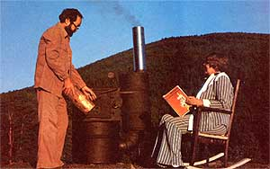

After 25 years and many experimental models, Wes Hatch presents . . .
Some 25 years ago, Wes Hatch of Athol, Idaho set out to build an efficient wood stove. Now-a full quarter of a century later-the Gem State perfectionist finally feels he's come up with a real winner ... and-perhaps most important of all-Wes's energy-efficient woodburner can be constructed in no more than two or three weekends of concentrated do-it-yourselfing!
The "Cedar Mountain Stove" (named after the lovely peak that rises above Hatch's land) features downdraft primary and secondary air inlets . . . both of which are preheated to keep combustion temperatures as high as possible. The secondary draft provides additional oxygen (with turbulence) in the area where volatile gases must concentrate as they flow out of the combustion chamber ... and-at this point-temperatures of as high as 1000°F ignite the gases (which, in a conventional stove, often go up the chimney unburned). As an added feature, the Cedar Mountain Stove is airtight, making it easier for the heater's users to control combustion.
Wes's stove design is based upon the use of two barrels: A 55-gallon drum serves as the main fuel chamber, and a 15- to 30-gallon drum functions as a heat exchanger. Volatile "fumes" are burned in an elbow (lined with fire clay) that connects the two . . . and, of course, in the heat exchanger itself.
Also, in order to keep the barrel from "burning out" and to provide higher internal temperatures, the inventor lined the combustion chamber with fire clay. The beauty of this earthen insulation is that-if desired-copper tubing can be embedded in the refractory lining and used to heat circulating water!
Best of all-though welding, both oxyacetylene and arc, is necessary-one doesn't have to be a master craftsperson to build a Cedar Mountain Stove . . . and the total cost of the homegrown product should be no more than $100 to $150, depending on the availability of materials. (Wes didn't actually set out to build an inexpensive, good-looking stove . . . but rather aimed at designing a unit that satisfied the requirements of complete, efficient combustion. He did, however, take whatever steps were necessary to keep the project's costs as low as possible.)
Was all of Mr. Hatch's work worth the effort? To that, I can answer a resounding YES! You see, Wes is my dad, so I've grown up serving as a guinea pig for each of his many stove creations . . . and-let me tell you-he's ecstatic about this one! In fact, the whole family is!
My husband and I used the Cedar Mountain prototype in our 65' X 14' trailer home this past winter and stayed comfy while burning only 2-1/2 cords of cull lodgepole pine . . . wood that couldn't be sold for posts, saw logs, or anything! (Dad also hooked up a gravity-flow water heater-this, too, fabricated from a couple of barrels-to another Cedar Mountain Stove in our milkhouse. The system will produce steaming water-150°F is not uncommon-overnight!)
Besides providing economical winter comfort, the stove is also tops for slow cooking. In the evening I put grains on to simmer for breakfast fare, then gently braise roasts and stews in a Dutch oven for our evening meal. Delicious!
We stoke our stove twice a day. . . and start a new fire only when we've purposely let the heater go out for cleaning (and that's only about once every six weeks). And, although we're charged for electricity at a farm rate (with one bill covering two dwellings, plus our milkhouse, garage, etc.), our switch to wood heat-in the trailer alone-dropped our energy costs about 25% !
It's true that-at first glance-the Cedar Mountain Stove appears rather unconventional, but oh! how our visitors enjoy its warmth. . . both from the burning wood and from the cozy conversations that take place around it!
EDITOR'S NOTE: Plans are available for $10 from Cedar Mountain Stoves, Inc., Dept. TMEN, Rt. 1, Box M-93, Athol, Idaho 83801. Or-for more information please send a 15 cents stamp.
|
 |
|
|